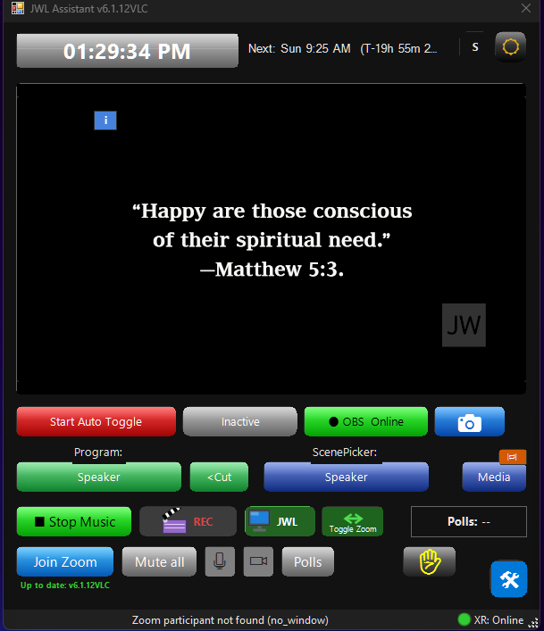

Main Screen Overview
▶ Watch: How the app works (video tutorial)A quick map of the main window - what each area does, with links to the detailed guide for anything that has one.

1. Top bar
The large clock shows the current time, and switches to a large flashing
countdown in the last 5 minutes before a scheduled meeting. The "Next:" label
shows the upcoming meeting date/time and a running countdown. See
Meeting Times / Timers for how to configure the
schedule and what the color flashes mean. The small icons on the far right are
the theme switch and app status indicators.
2. Preview panel
Shows the live OBS Program output (or a live camera feed - see
Live Camera Preview). The blue "i" button
opens the PTZ Camera & Auto Frame setup guide.
The AF/PTZ overlay controls (arrows, AF ON/OFF, ROI) only appear when the
"Speaker" scene is live on Program - they're hidden for other scenes like Media.
3. Status row
Start/Stop Auto Toggle - begins automatic scene switching driven by OCR
keyword detection.
OCR status chip ("Inactive"/"Present"/"Absent") - shows whether the configured keyword is currently detected on screen (see Tesseract OCR).
OBS connection indicator - green "OBS Online" when WebSocket is connected; auto-reconnects every 2 seconds otherwise.
Camera icon - toggles the camera-preview capture mode.
OCR status chip ("Inactive"/"Present"/"Absent") - shows whether the configured keyword is currently detected on screen (see Tesseract OCR).
OBS connection indicator - green "OBS Online" when WebSocket is connected; auto-reconnects every 2 seconds otherwise.
Camera icon - toggles the camera-preview capture mode.
4. Program / Scene Picker row
Program shows the currently live OBS scene, with a Cut button to
switch the selected scene to Program instantly. Scene Picker: left-click
switches straight to the Speaker scene; right-click opens the full scene picker
menu. See Scene Picker for linking scenes to XR
snapshots and PTZ presets.
5. Media controls row
Music - play/stop background music (left-click), or open the mini
player (right-click).
REC - start/stop OBS recording - see OBS Recording.
JWL - JWL (JW Library) display monitor toggle.
Toggle Zoom - move the Zoom meeting window to a projector/second monitor and back; right-click for more options.
Polls - shows poll status; see Polls.
REC - start/stop OBS recording - see OBS Recording.
JWL - JWL (JW Library) display monitor toggle.
Toggle Zoom - move the Zoom meeting window to a projector/second monitor and back; right-click for more options.
Polls - shows poll status; see Polls.
6. Zoom controls row
Join Zoom - launch and auto-join your configured meeting.
Mute All, mic, and camera toggle buttons - control your own and participants' audio/video (see Zoom Hotkeys for the underlying shortcuts).
Polls - launches your configured attendance poll.
Hand Alert (yellow hand icon) - shows a full-screen alert on a chosen monitor when a hand is raised.
Settings gear - opens the main Settings dialog (OBS, Meeting Times, XR Mixer, Zoom, and everything else covered in this Help Center).
Mute All, mic, and camera toggle buttons - control your own and participants' audio/video (see Zoom Hotkeys for the underlying shortcuts).
Polls - launches your configured attendance poll.
Hand Alert (yellow hand icon) - shows a full-screen alert on a chosen monitor when a hand is raised.
Settings gear - opens the main Settings dialog (OBS, Meeting Times, XR Mixer, Zoom, and everything else covered in this Help Center).
7. Bottom status bar
The left side shows a scrolling log of what the app is currently doing (useful
for troubleshooting). The right side shows the XR mixer connection status - see
XR Mixer.